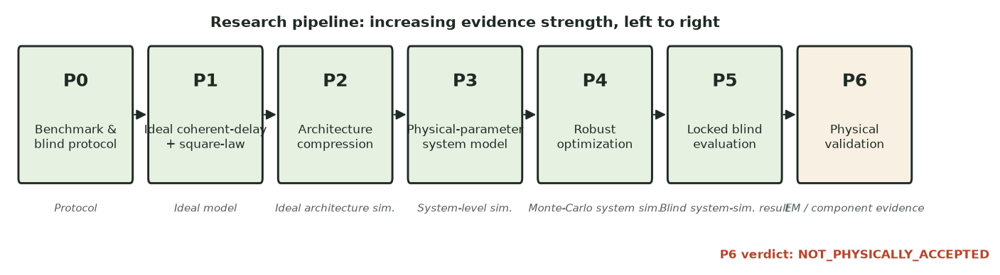
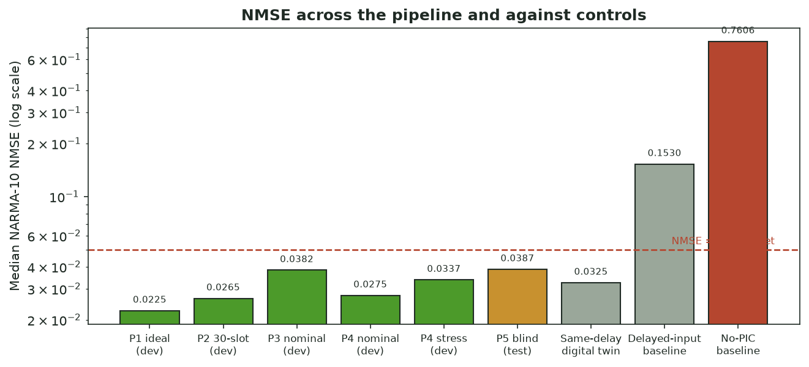
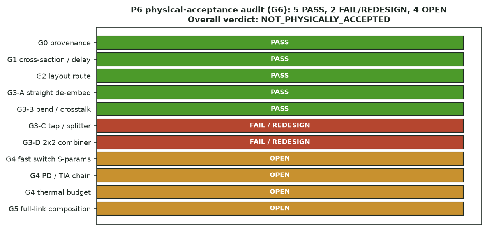
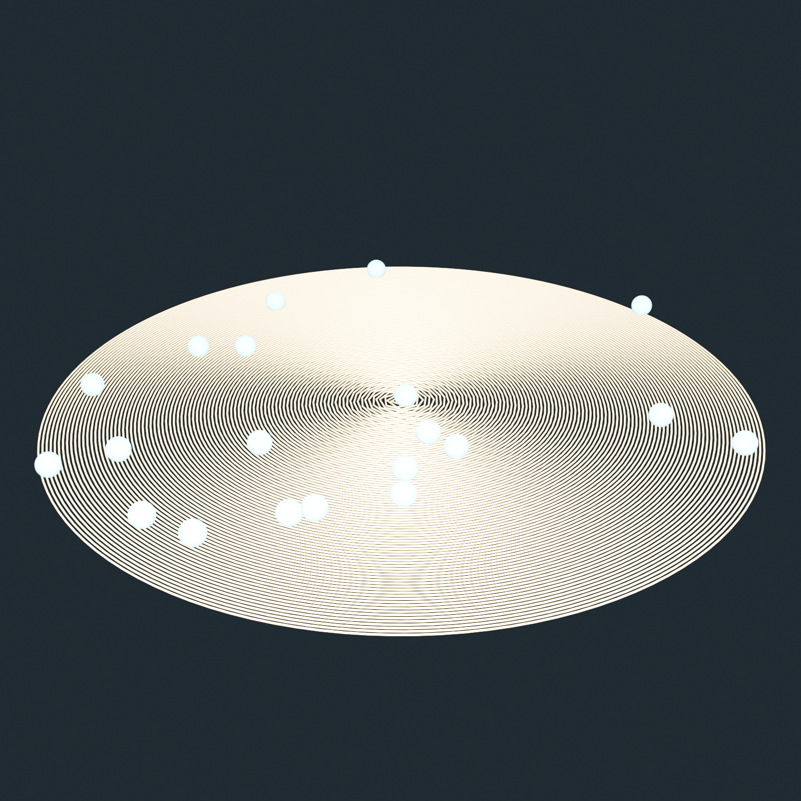

0.0387
blind median NARMA-10 test NMSE (target < 0.05)
A staged, blind-tested study of whether coherent time-delayed optical fields plus square-law photodetection can build the temporal nonlinear features NARMA-10 needs — with a component-level electromagnetic validation campaign for the selected architecture.
NOT_PHYSICALLY_ACCEPTED (5 of 11 gates pass).


Presentation model captured from the author's live Blender session (numbers consistent with the
layout records; association with the on-disk mcp.blend unverified):

Data-derived spiral reconstruction from spiral-centerline-v1.csv:
